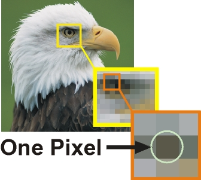
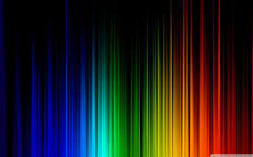
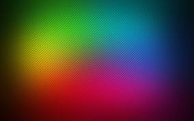
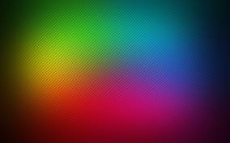
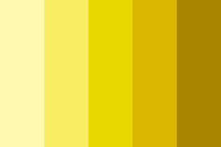

What are pixels?
Pixel is the smallest element of a picture that can be controlled. 'Pix' stands for picture and 'el' for element.

This picture has 450 pixels long width and 300 pixels long height so it has 300*450 = 135 thousand total number of pixels!
You must have heard that cameras have resolution in "MegaPixels". What that means is, the picture clicked by a 2 megaPixel camera will have 2 million pixels!
Yes we can control a million pixels :D Each pixel contains information about the color of that pixel. Now before we see how it stores that information let's understand how colors are made in a digital image.
 

As you can see in the image that when Red (R) ,Green (G) and BLUE (B) colors are mixed different colours are produced. Each of the color R,G,B can have 256 shades in a digital image. Each can have values from (0 to 255). Value 0 means that the colour is not present and 255 means that color has its strongest shade. Now each Pixel has four components. Red Green and Blue values and lets forget the fourth one for now. For example, the value (255,0,0) will show the Red color. Green and blue have '0' values and red is present in its strongest shade with value '255'.
Infact, mixing different shades of R G B can form 256*256*256 which is around 16.77 million colors! Now go back to the ImageViewer and open an image, click on edit icon , then click RGB icon and increase/ decrease each color! The sliders change the RGB values of all the pixels of the image. Increase red to highest and green,blue to lowest to see the example given above.
Brighter colors have higher values for their red, green, and blue components. It follows naturally that we can alter the brightness of an image by increasing or decreasing the color components of each pixel.

Now you can go to image viewer and try out the brightness adjuster. Understanding how it works is very simple, evry RGB component of each of the pixels is increased to give a brighter image and decreased to give a darker image.
If you don't believe me, then just open the RGB adjusters again and increase all of them by the same amount, It should give the same effect as the brightness adjuster does :)